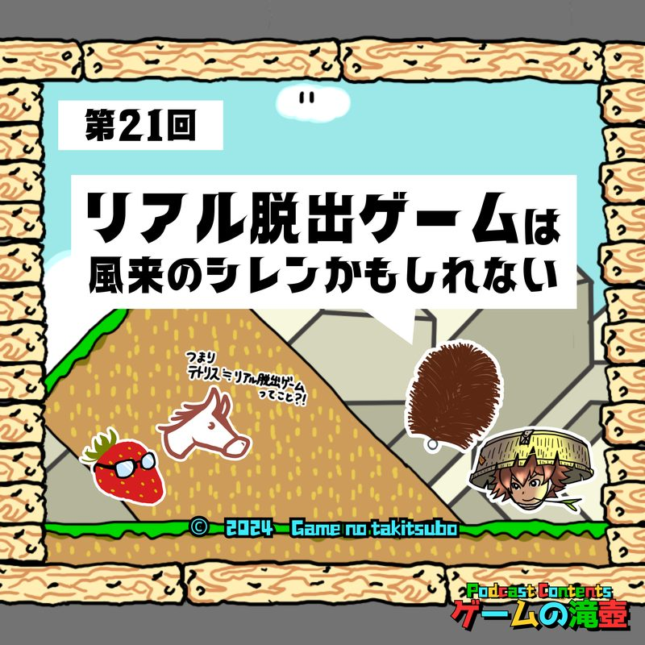
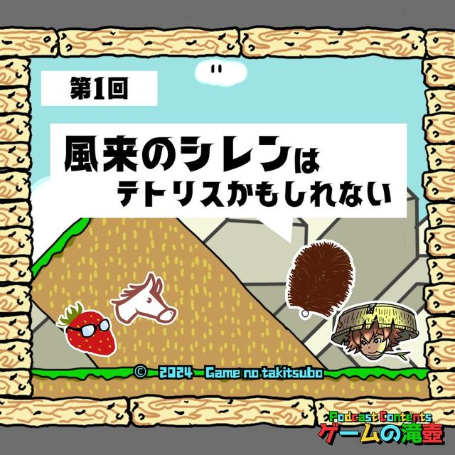
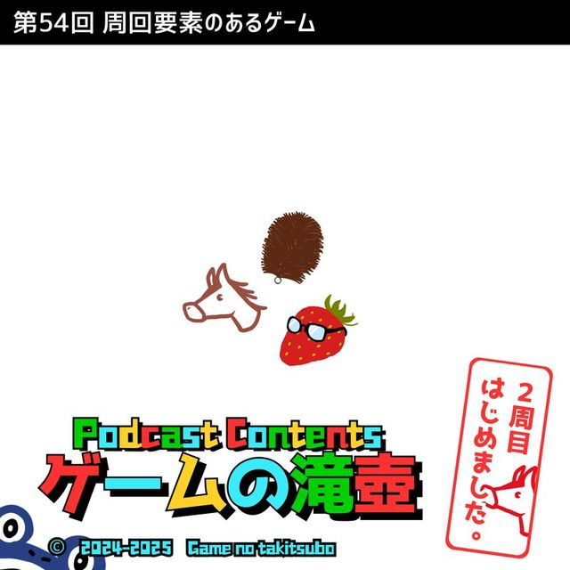
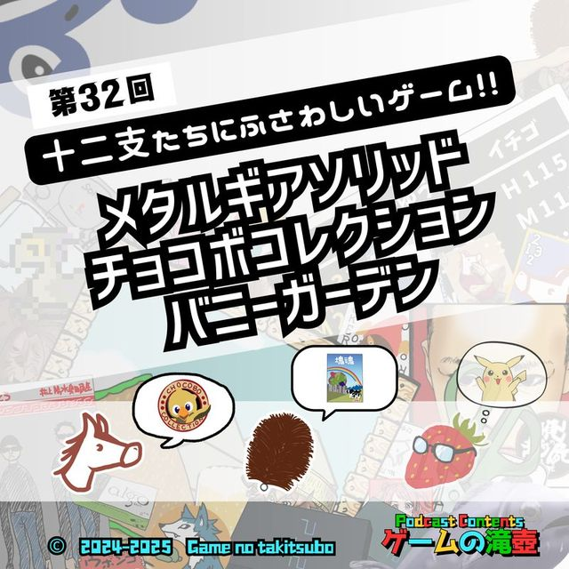
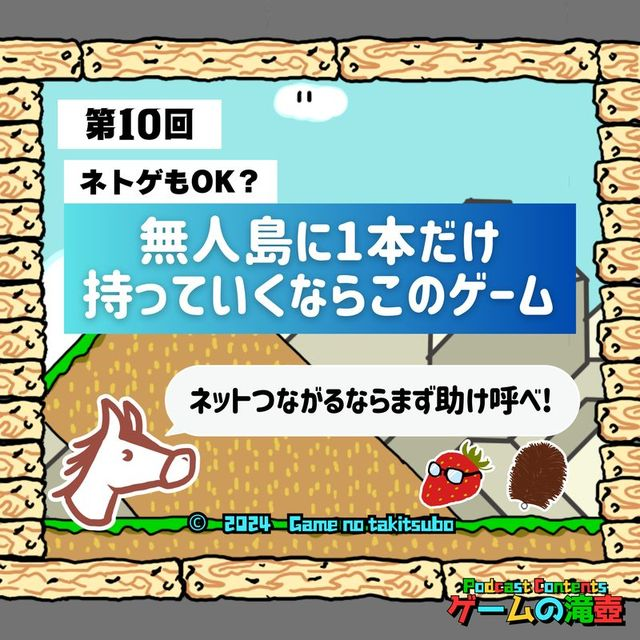

風来のシレン
ポッドキャスト「ゲームの滝壺」で「風来のシレン」が話題に出た回の一覧です。
滝壺での登場 11回メインテーマとして語られた回があります。

#212024.10.16🎙 メインで語られた回 リアル脱出ゲームは風来のシレンかもしれない 今回はリアル脱出ゲームなど、SCRAPが作る遊びの布教回となっております。 （ゲームの滝壺は、ゲームと名のつくものなら何でもお話しするポッドキャストです）
#12024.05.30🎙 メインで語られた回 風来のシレンはテトリスかもしれない ⏱ 05:42〜 メインテーマ：風来のシレンの布教14年ぶりに発売された風来のシレン6が好評につき、シリーズの大ファン夜中たわしが他2人に布教します。次回から毎週水曜更新！ #1032026.04.29💬 トーク内で登場
ぽこ あ ポケモン「荒廃した世界で慌ただしいスローライフ生活」
あまりにやることが多すぎる、ぽこ あ ポケモンについてのお話です。 ザ・スーパーマリオギャラクシー・ムービーの感想もすこしあります！
#1032026.04.29💬 トーク内で登場
ぽこ あ ポケモン「荒廃した世界で慌ただしいスローライフ生活」
あまりにやることが多すぎる、ぽこ あ ポケモンについてのお話です。 ザ・スーパーマリオギャラクシー・ムービーの感想もすこしあります！
 #1012026.04.15💬 トーク内で登場
Baby Steps「何って…片方の足を、もう片方の足の前に出しただけだが？」
クリアに3ヶ月を要した、あの歩くだけのゲームについてお話させていただきます！
#1012026.04.15💬 トーク内で登場
Baby Steps「何って…片方の足を、もう片方の足の前に出しただけだが？」
クリアに3ヶ月を要した、あの歩くだけのゲームについてお話させていただきます！
 #1002026.04.08💬 トーク内で登場
100点満点のゲーム！！
祝！ ゲームの滝壺100回記念！ リスナーのみなさんから投稿いただいた100点満点のゲームが大量に登場する、 いいゲームとエピソードばかりが次々出てくる夢のような回です！
#1002026.04.08💬 トーク内で登場
100点満点のゲーム！！
祝！ ゲームの滝壺100回記念！ リスナーのみなさんから投稿いただいた100点満点のゲームが大量に登場する、 いいゲームとエピソードばかりが次々出てくる夢のような回です！
 #982026.03.25💬 トーク内で登場
ポケモン緑、サクラ大戦、海腹川背…今夜決定！ 国民の祝日にふさわしいゲーム！！
祝日を体験済みのすべての皆さん！！ その祝日に対応するゲームは何なのか気になっていませんか？ 国民の祝日にふさわしいゲーム、すべて決めます！ ※今回紹介している『Idle Gumball Machine』は、開発元のA…
#982026.03.25💬 トーク内で登場
ポケモン緑、サクラ大戦、海腹川背…今夜決定！ 国民の祝日にふさわしいゲーム！！
祝日を体験済みのすべての皆さん！！ その祝日に対応するゲームは何なのか気になっていませんか？ 国民の祝日にふさわしいゲーム、すべて決めます！ ※今回紹介している『Idle Gumball Machine』は、開発元のA…
 #862026.01.07💬 トーク内で登場
新春！ 五十音全部にふさわしいゲームタイトルを集めて滝壺かるたを作ろう！
滝壺にまつわるゲームタイトルを集めに集めて、ゲームタイトルかるたを考案します！
#862026.01.07💬 トーク内で登場
新春！ 五十音全部にふさわしいゲームタイトルを集めて滝壺かるたを作ろう！
滝壺にまつわるゲームタイトルを集めに集めて、ゲームタイトルかるたを考案します！

#542025.06.04💬 トーク内で登場 ゲームの滝壺 2周目はじめました。クロノ・トリガー、ニーア オートマタ、鉄腕アトム アトムハートの秘密、オートローグ…周回要素のあるゲーム！ ゲームの「2周目」に関する話、予想より奥が深いです。 #512025.05.14💬 トーク内で登場
キャッチコピーは「どうあがいても、滝壺」
ゲームのキャッチコピー全般について扱ったら、ひゅうまが張り切りすぎた回です！ ※某SIRENの話題は一切出ません
#512025.05.14💬 トーク内で登場
キャッチコピーは「どうあがいても、滝壺」
ゲームのキャッチコピー全般について扱ったら、ひゅうまが張り切りすぎた回です！ ※某SIRENの話題は一切出ません

#322025.01.01💬 トーク内で登場 メタルギア、チョコボコレクション、バニーガーデン…今夜決定！ 十二支たちにふさわしいゲーム！！ 年も明けたということで、十二支それぞれを代表するゲームを決めちゃいます！
#102024.07.31💬 トーク内で登場 ネトゲもOK？ 無人島に1本だけ持って行くならこのゲーム 無人島（電気が使える）に1本だけ持っていくなら何のゲームか！？ 話が進むと「1本だけ持っていける」以外どんどんルール無用になっていきます。TALKED TOGETHER同じ回で話題に出たタイトル
🎧 気になった回は、各ページのプレイヤーからすぐ再生できます。
「風来のシレン」の話がもっと聴きたくなったら、おたよりでリクエストしてもらえると番組が喜びます。